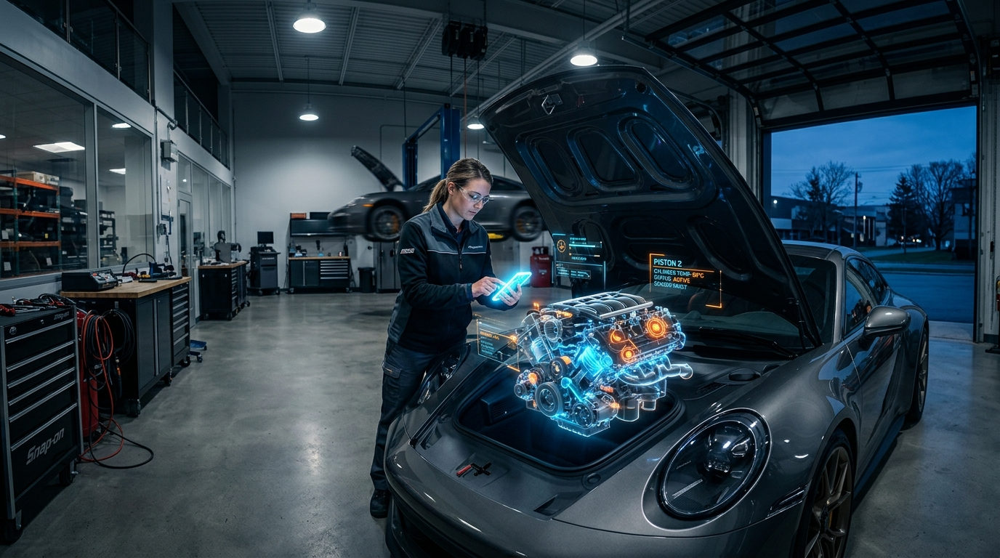

Listen & Fix: Empowering the Digital Mechanic with Multimodal AI and Just-in-Time RAG
Explore Listen & Fix: a diagnostic platform using Gemini 3 Flash and Just-in-Time RAG to provide real-time audio/visual repair guidance for DIY mechanics.
Bridging the Gap Between Technical Uncertainty and Mechanical Authority with Gemini-Powered Multimodal AI
Every homeowner and amateur mechanic has experienced the "Mechanic’s Dilemma": that sinking feeling when a mysterious knock emanates from under the hood or a high-pitched whine signals the impending failure of a washing machine. Traditionally, the gap between identifying a symptom and executing a repair was filled with hours of scouring dense manuals or watching generic YouTube videos that never quite match your specific model.
The Listen & Fix ecosystem changes this paradigm. By leveraging the state-of-the-art Google Gemini 3 Flash model, we have developed a high-performance, multimodal diagnostic platform that acts as a "Shazam for Engines and Appliances." This system does more than just guess; it integrates real-time audio, video, and image analysis with a "just-in-time" Retrieval-Augmented Generation (RAG) pipeline. By grounding AI insights in crawled technical manuals and service bulletins, Listen & Fix transforms the user from a frustrated bystander into a confident technician.
The ListenFixAssistant: A Structured Path to Resolution
At the heart of the ecosystem is the ListenFixAssistant, a high-performance React-based wizard designed to manage the transition from uncertainty to authority. The workflow is divided into four distinct phases:
- Capture Step: Users provide the "raw evidence"—high-resolution photos of worn components or audio recordings of mechanical failure.
- Details Step: A 6-step context wizard gathers equipment metadata such as make, model, year, and the user's specific DIY skill level.
- Analyzing Step: Data is streamed to the backend via an NDJSON stream, providing the user with real-time progress updates like "Analyzing engine harmonics..." or "Cross-referencing thermal signatures."
- Results Step: The system renders a comprehensive RepairGuide, an interactive dashboard providing a diagnosis, a curated list of necessary tools, and step-by-step instructions tailored to the user's expertise.
Multimodal Analysis: Seeing and Hearing the Problem
Unlike traditional diagnostic tools that rely on manual feature extraction (such as MFCC or spectral analysis), the Listen & Fix diagnostic engine utilizes Gemini’s native multimodal capabilities. This allows for "Multimodal Fusion," where the AI correlates disparate data streams simultaneously.
For instance, the system can sync a 44.1 kHz audio recording of a squealing belt with a video frame showing a misaligned pulley. By identifying high-frequency audio spikes alongside visual wear patterns, the system can detect micro-fractures or bearing wear before catastrophic failure occurs. Every diagnosis is accompanied by a confidence score (0.0 to 1.0) and a severity rating (low, medium, high, or critical), ensuring the user understands the urgency and reliability of the AI’s findings.
Just-in-Time RAG: The Scout and the Librarian
To ensure technical accuracy, the system employs a dual-path Retrieval-Augmented Generation (RAG) infrastructure.
This service searches for and ingests technical documentation in real-time based on the specific equipment metadata provided. It fetches data from trusted sources like iFixit, RepairPal, and the NHTSA, using Gemini to strip away "workshop noise" like ads and navigation.
Once the data is cleaned, the Librarian chunks the data into manageable segments, ensuring safety warnings and torque specs remain intact. These chunks are converted into vector embeddings using the gemini-text-embedding model.
This allows the AI to find the "right page at the right time," linking a user’s description of an "engine knock" to a manual’s "connecting rod clearance" through mathematical similarity, even if the user lacks the professional terminology.
Technical Architecture and Backend Integration
The ecosystem is built on a Next.js framework using the @google/genai SDK. The backend is orchestrated by the DiagnosisService, a TypeScript library that processes multimodal inputs and returns structured JSON responses. Large file handling is managed through a dedicated Gemini API Route, which utilizes resumable upload protocols for files up to 2GB.
async function analyzeDiagnostic(media: FileData, metadata: EquipmentContext) {
const prompt = `Perform a technical diagnosis for this ${metadata.make} ${metadata.model}.
Analyze the provided audio/visual data for mechanical anomalies.
Cross-reference with ingested RAG context for specific torque specs and part numbers.`;
try {
const result = await model.generateContent([prompt, ...media.parts]);
const responseText = result.response.text();
// Ensure the response is valid JSON before returning to the UI
return JSON.parse(responseText);
} catch (error) {
console.error("Failed to parse diagnostic response:", error);
throw new Error("The diagnostic engine returned an unreadable format. Please try again.");
}
}While the backend handles the heavy lifting of high-bandwidth data transfers, the interface must translate this complexity into an intuitive, high-trust experience that guides the user through the physical repair.
The Digital Foreman: Design for High-Trust Environments
In a repair scenario, the user interface must convey authority and calm. Our "Digital Foreman" design system rejects the clutter of traditional apps. It adheres to the "No-Line Rule," where space is defined through background tonal shifts rather than 1px borders. This reduces visual noise, which is critical in high-stress environments where a user might be working in a cramped, oily, or dimly lit space.
We use a dual-typeface system: Inter for headlines to project authority, and Public Sans for technical instructions to ensure legibility. The color palette is rooted in stable blues and charcoals, while critical warnings use a sophisticated burnt orange (#5f2200). Snappy, mechanical animations and glassmorphism overlays keep the user grounded in the physical context of their repair, ensuring the technology feels like a professional tool rather than a toy.
Safety Protocols and Automated Parts Sourcing
Safety is the highest priority in the Listen & Fix ecosystem. The system identifies high-risk equipment and injects mandatory, domain-specific safety protocols into the RepairGuide. For vehicles, this includes warnings about jack stands and hazardous fluids; for HVAC, it covers EPA certifications for refrigerant handling.
Additionally, the system automates the "what now?" phase through a Parts & Inventory Sourcing module. It identifies exact part numbers and queries live search results for local availability at retailers like AutoZone or Home Depot. A "Supplier Matrix" provides average delivery times and compliance scores, allowing the user to move immediately from diagnosis to procurement without leaving the platform.
Conclusion
The Listen & Fix ecosystem represents a significant leap forward in DIY maintenance. By combining the multimodal intelligence of Gemini 3 Flash with a robust, just-in-time RAG pipeline, we have eliminated the guesswork that defines modern repair. Whether you are a beginner looking for a simple fix or a professional seeking exact torque specifications, the system provides the right information at the precise moment it is needed. Through the "Digital Foreman" design system and a commitment to safety, Listen & Fix doesn't just tell you what is wrong—it gives you the authority and the tools to make it right.